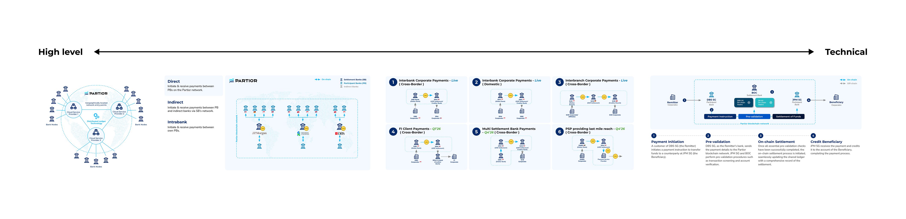
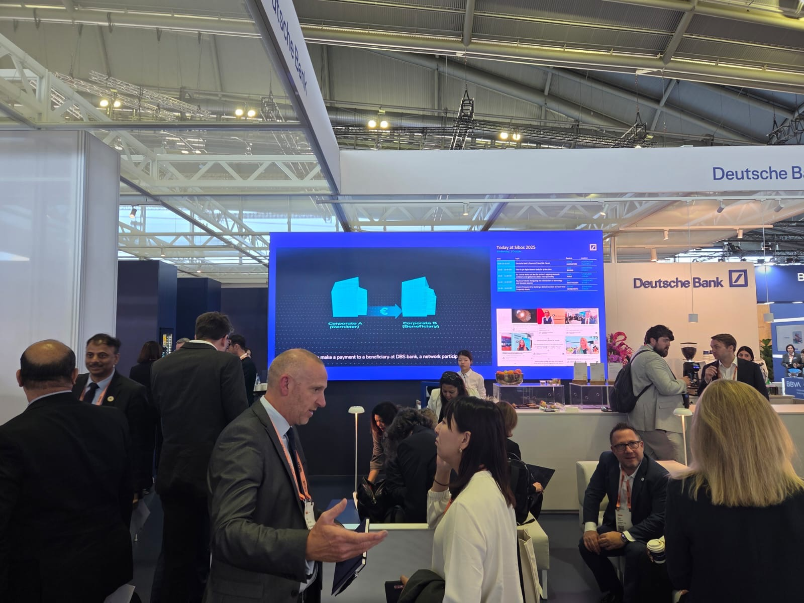
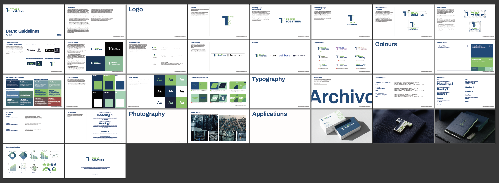
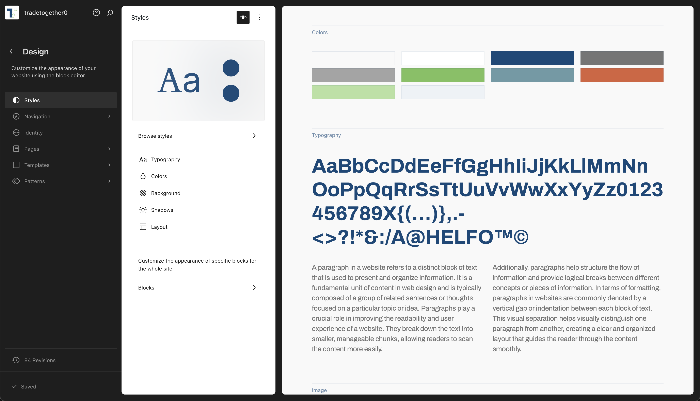
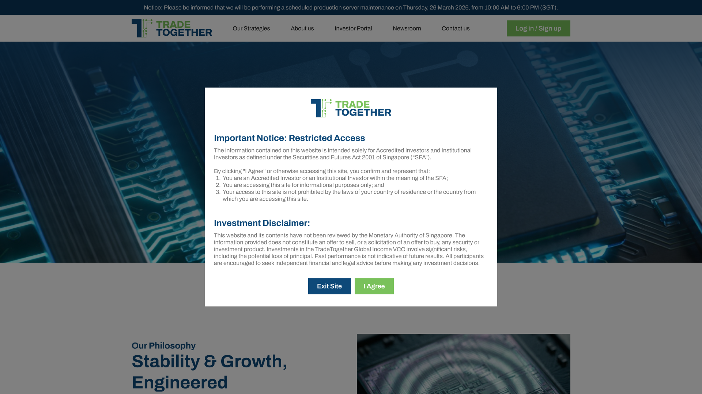

Designing clarity in complex systems — helping users understand, decide, and act.
I design systems and experiences that simplify complex workflows and improve how people interact with products. My background in fintech and marketing allows me to bridge business, user needs, and execution.
Context
Partior — An institutional, blockchain-based clearing and settlement platform for global financial institutions.
Problem
Banking stakeholders struggled to grasp the platform’s utility due to high cognitive load from overly technical documentation. The existing materials were inaccessible for non-technical decision-makers, creating a friction point in critical Go-To-Market (GTM) conversations.
Approach
I reframed the challenge from a technical documentation task to an information design problem:
Solution
I developed a visual-first narrative infrastructure designed to facilitate high-level banking engagements:

Trade-offs
Clarity vs. Completeness: I made a deliberate choice to simplify technical edge cases to improve the usability of the information. While this meant omitting certain technical granularities, it ensured that the core value proposition was understood and actionable during time-sensitive bank engagements.
Outcome
The redesigned narrative system significantly reduced friction in GTM cycles and improved institutional understanding. The assets were deployed at Sibos, supporting major engagements with global partners such as Deutsche Bank.

Photo of Deutsche Bank's booth at Sibos, showcasing the video I've developed for Partior, helping communicate complex infrastructure concepts to global banking stakeholders.
Video link: Deutsche Bank conducts firs euro transaction on Blockchain
Skills
Information Design · Product Storytelling · Stakeholder Communication · GTM Enablement · Visual Communication · Systems Thinking
Context
TradeTogether, a Singapore-based investment firm managing a Variable Capital Company (VCC) focused on digital infrastructure and AI. The project involved a comprehensive brand identity redesign and a full-scale website revamp to transition the firm from a retail-leaning digital presence to an institutional-grade platform.
Problem
The legacy brand identity and website did not reflect the firm’s operational maturity or its CMS-licensed status. While the firm was scaling to manage institutional-grade funds, the existing user experience felt disconnected from the high-stakes, regulated environment of Singaporean finance, creating a "trust gap" for sophisticated allocators and family offices.
Approach
I approached the revamp as a first-principles problem, focusing on how design can build institutional trust:
Solution
I delivered an Institutional Foundry—a web ecosystem designed for usability and structural clarity:



Trade-offs
Regulatory Integrity vs. User Friction: A key challenge was implementing the mandatory investor eligibility self-assessment. While traditional UX patterns prioritise "frictionless" entry, I defended the introduction of a deliberate "compliance gate." I argued that for institutional users, a clear regulatory perimeter is a trust-building feature rather than a barrier, as it validates the firm's legal and fiduciary rigour.
Outcome
The revamp supported the firm’s transition to a full CMS Licence from MAS. By prioritising a clear "System of Record" and a maintainable backend, I strengthened brand trust and provided the sustainable architecture necessary to launch the TradeTogether Global Income VCC Fund.
Website link: TradeTogether Staging Site
Skills
Information Architecture · UX Writing · User Flow Design · Content Strategy · Cross-functional Collaboration · Web Optimisation
I focus on understanding users early, prototyping quickly, and iterating based on feedback. I prioritise clarity and usability over perfection.
Figma · Adobe Creative Suite · Web CMS · HTML/CSS/Javascript · AI-assisted workflows
Email: xlcommunicates@gmail.com
LinkedIn: https://www.linkedin.com/in/xianlong-yue-673240166/